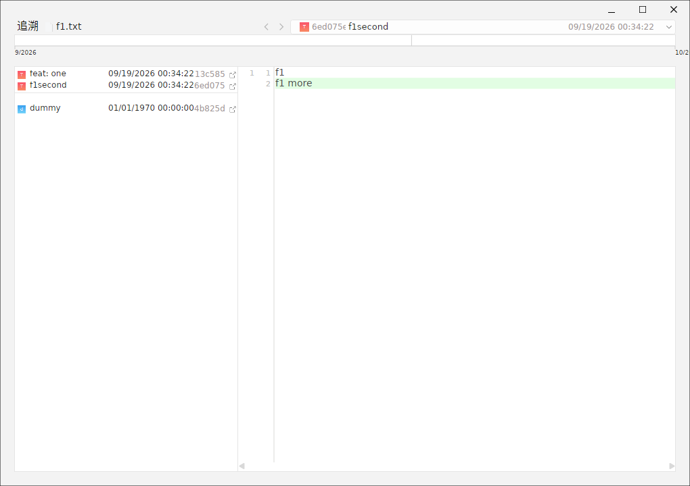
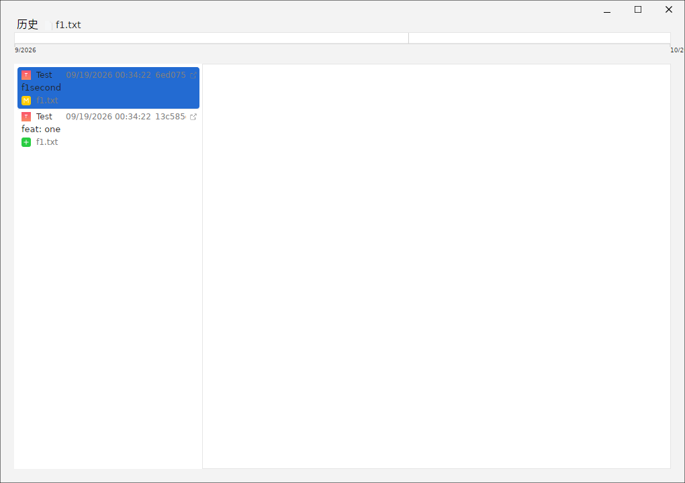
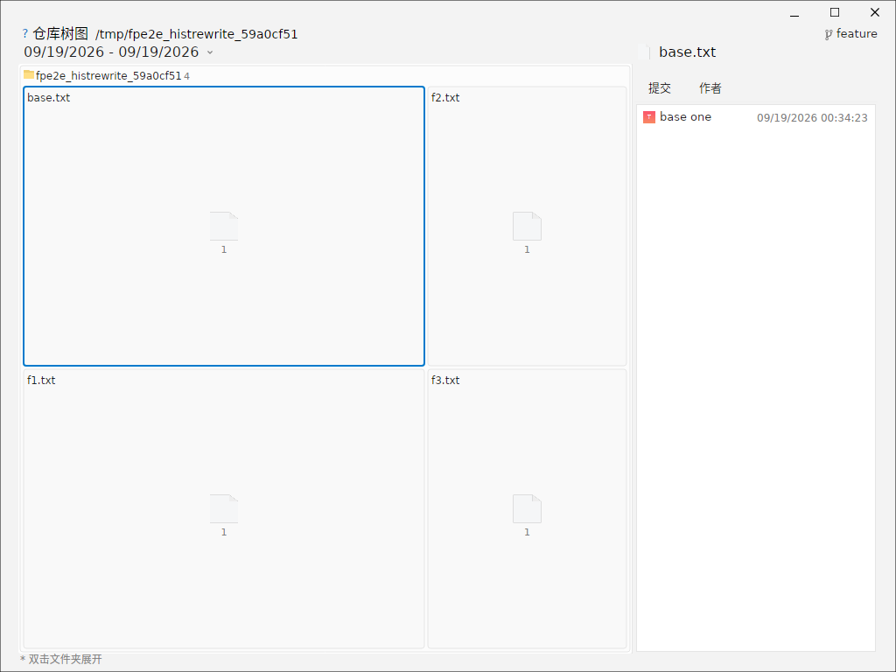
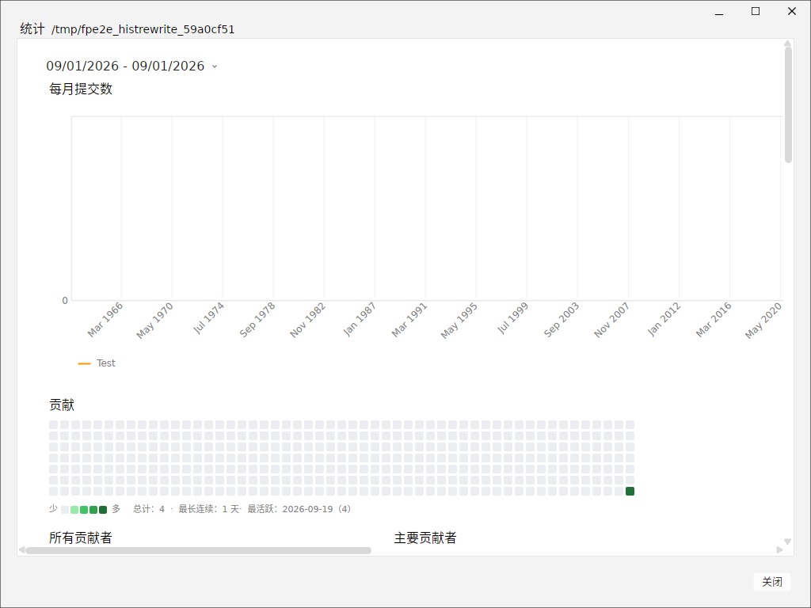
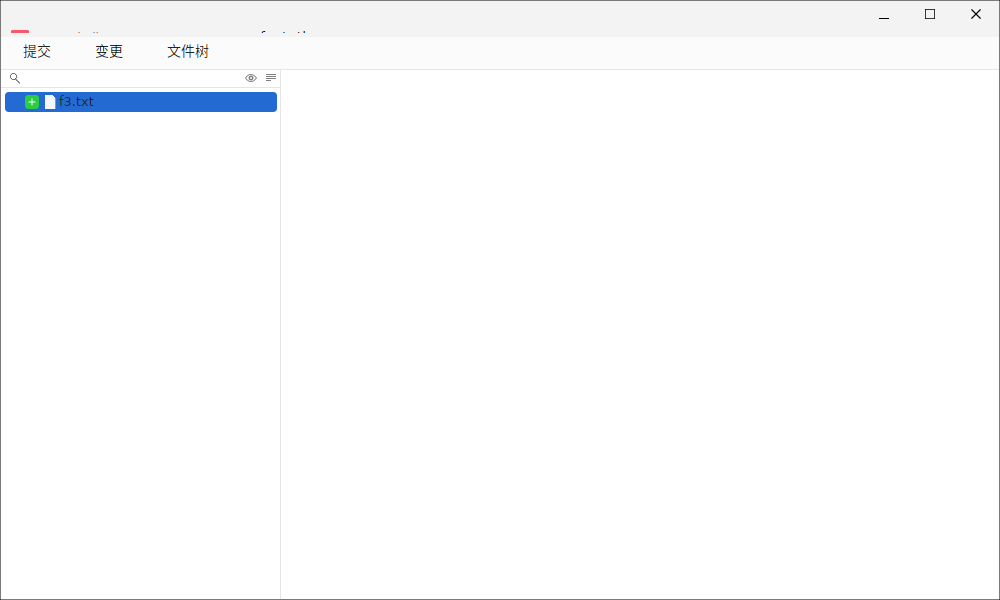
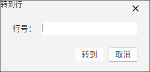

ForkPlus 提供一组独立的「查看器」窗口，用于从不同角度审视仓库：逐行归属（Blame）、单个文件/文件夹历史、仓库整体概览、贡献统计，以及修订详情、跳转行等。
Blame（逐行归属）
对单个文件打开 Blame 窗口，可逐行查看「这行代码是哪个提交、哪个作者引入的」。左侧通常给出提交信息/作者，右侧是代码行，适合回溯一行改动的来龙去脉。

文件 / 文件夹历史
对某个文件或文件夹打开历史窗口，可只看到「影响它的提交」，而忽略仓库其他部分的改动，便于聚焦某个模块的演进。

仓库概览
「仓库概览」以树图/矩阵形式展示仓库的目录与文件大小分布，快速定位「哪些目录最臃肿、哪些文件最占空间」，是接手新仓库时快速建立认知的入口。选择节点后，下方会联动显示其提交列表与主要作者。

贡献统计（Statistics）
「统计」窗口基于当前活跃分支的提交进行作者聚合：
- 每月提交数：线/柱图展示提交的时间分布。
- 贡献热力图：GitHub 风格的格子图，绿色深浅表示某日提交活跃度；下方给出「总计」「最长连续」「最活跃」指标。
- 作者聚合：通过「所有贡献者 / 主要贡献者」切换，查看各作者的提交总数。
同时还有饼图、按星期几/小时的提交柱状图等，帮助理解团队的提交节奏。

小贴士：统计需要当前分支有多于 2 个提交才会生成全部图表；提交过少时窗口会提示无法生成统计。
修订详情（Revision Details）
对某个具体提交（修订）打开详情窗口，集中查看其作者、提交说明、改动文件列表及 diff，适合在不切换主工作区的情况下单独审查某一个提交。

跳转行（Go To Line）
在需要按行导航的编辑器/history 场景中，可用「跳转行」窗口输入目标行号：输入有效的非负数字后跳到该行；留空或输入非数字内容则忽略。适合大文件快速定位。
